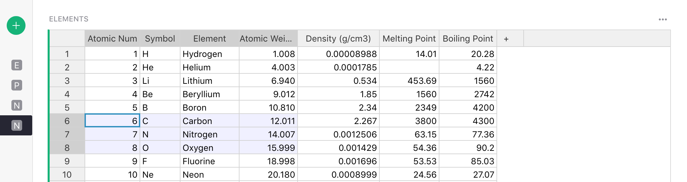
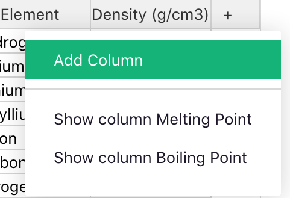
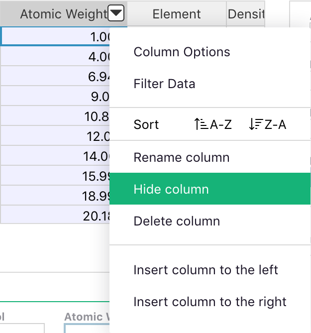
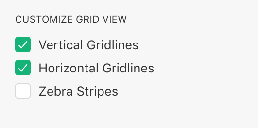
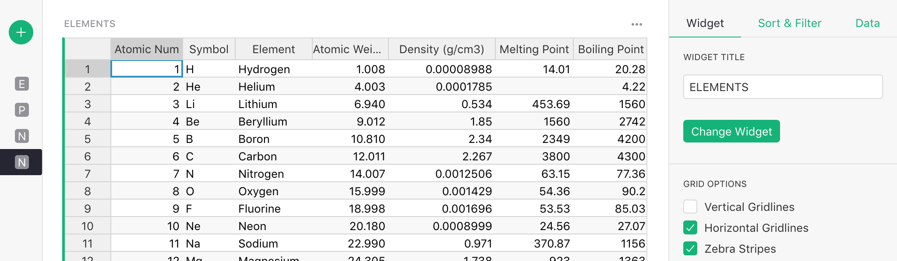

Page widget: Table#
The Table widget is a versatile spreadsheet-like grid.

Here are some useful features to know.
Column operations#
-
Resize columns: Click on the line between column headers, and drag it to resize columns.
-
Reorder columns: With a column selected, drag its header to move it to a different place relative to other columns. (You can also do this by reordering fields in the widget options panel.)
-
Rename columns: With a column selected, click its header to rename it. Hit
Enterto save the new name. -
Add columns: Click the “+” icon on the right of all the column headers to add a new column, or show any of the hidden columns. The column menu also allows inserting a new column next to an existing column, as do the keyboard shortcuts
Alt + +(insert before) andAlt + =(insert after).
After adding a column, the column name (set by default to “A”, “B”, “C”, etc.) is immediately selected and highlighted to let you quickly rename it. Just type in the new name and hit
Enter, or hitEscapeto keep the default name. -
Hide columns: Move the mouse over the column header and click the triangle to open the column menu. Click “Hide column” to hide the column. The column remains in the underlying data, and can be shown again using the “+” icon on the right of the column headers, or the field list in the widget options panel.

-
Delete columns: Delete the actual column of data using the column menu option, or the
Alt + Minuskeyboard shortcut. The table is the only widget that allows deleting a column.Note: deleting and hiding are different. Hiding a columns removes it only from the current page widget, but leaves it in the data and available to formulas. Deleting a column removes it from everywhere. (Of course, undo still works for either operation!)
Row operations#
- Add rows: Type into the last row in a table, which is highlighted to indicate that it’s a
placeholder for adding new records. Right click a row number to insert a blank row next to an
existing row, or use the keyboard shortcuts
⌘ + +(Mac) orCtrl + +(Windows) to insert before, and⌘ + =(Mac) orCtrl + =(Windows) to insert after.

- Delete rows: Right click a row number and select the “Delete” option to delete a row, or use the
⌘ + Minus(Mac) orCtrl + Minus(Windows) shortcut. If you select a range of cells first, either of these delete actions will delete all rows included in the range.
Navigation and selection#
-
Navigate using shortcuts: Use keyboard shortcuts to navigate the grid:
Tab,Shift + TabMove to the next or previous column, saving changes if editing a cell.⌘ + Up(Mac) orCtrl + Up(Windows) Move up to the first row.⌘ + Down(Mac) orCtrl + Down(Windows) Move down to the last row.HomeorFn + ←(Mac) Move to the beginning of a row.EndorFn + →(Mac) Move to the end of a row.PageDownorFn + ↓(Mac) Move down one page of rows.PageUporFn + ↑(Mac) Move up one page of rows.Alt + Down,Alt + UpMove down or up five rows. -
Select ranges: Click and drag a mouse across the grid to select a range of cells to copy (copy and paste using the usual keyboard shortcuts for your computer). Another way to select a range is to click one cell, and then hold
Shiftwhile clicking another cell, or while navigating with the arrow keys. -
Fill down data: Select a range of cells, and hit
⌘ + D(Mac) orCtrl + D(Windows) to fill the whole selected range with the values of the cells in the top row of the range.
Customization#
- Customize table looks: In the widget options panel, you can turn off horizontal or vertical grid lines, or turn on zebra striping.

For example, this lets you change the look of your grid to a list like this: 